DB Code’s menu is quite extensive with nine top–level items.
| The Menu | ||
| The Edit Menu | The Targeting Menu | The View Menu |
| The Mode Menu | The Language Menu | The Coding Menu |
| The Options Menu Item | The Theme Menu | The Help Menu Item |
| Other Help Pages | ||
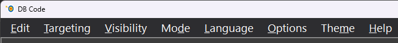
The menu has nine items: “Edit”; “Targeting”; “Visibility”; “Mode”; “Language”; “Coding”; “Options”; “Theme”; and “Help”. All menu items, their children and grandchildren have accelerator keys and many have keyboard shortcuts (when they have no children).
Accelerator keys and keyboard shortcuts presented here are the defaults; the user is free to use the Shortcut Manager (located within the Options dialog on the “Shortcuts” page) to modify these at their discretion. (See here for details.)
Even when the menu is hidden in the “Minimal” view, its items are still accessible via keyboard shortcuts.
The Edit Menu (ALT+e)
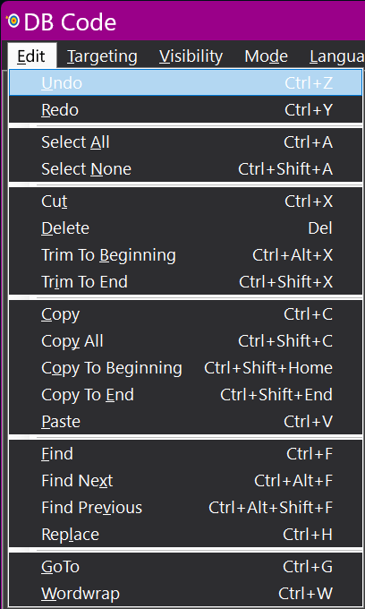
The Edit menu has nineteen subitems: Undo; Redo; Select All; Select None; Cut; Delete; Trim To Beginning; Trim To End; Copy; Copy All; Copy To Beginning; Copy To End; Paste; Find; Find Next; Find Previous; Replace; GoTo; and Wordwrap.
The “Undo” (CTRL+z) subitem uses the classic undo stack built into the RichTextBox.
The “Redo” (CTRL+y) subitem uses the classic redo stack built into the RichTextBox.
The “Select All” (CTRL+a) subitem selects the entire contents of the RichTextBox.
The “Select None” (CTRL+SHIFT+a) subitem removes any selection from the RichTextBox.
The “Cut” (CTRL+x) subitem cuts any selection from the RichTextBox and places it on the clipboard as rich text.
The “Delete” (Del — the delete key) subitem deletes any selection from the RichTextBox. If nothing is selected, the letter to the right of the cursor position is deleted.
The “Trim To Beginning” (CTRL+ALT+x) subitem cuts everything from the cursor position to the very beginning of the text in the RichTextBox and places it on the clipboard as rich text.
The “Trim To End” (CTRL+SHIFT+x) subitem cuts everything from the cursor position to the very end of the text in the RichTextBox and places it on the clipboard as rich text.
The “Copy” (CTRL+c) subitem copies all selected text in the RichTextBox and places it on the clipboard as rich text.
The “Copy All” (CTRL+SHIFT+c) subitem selects everything in the RichTextBox, copies it and places it on the clipboard as rich text.
The “Copy To Beginning” (CTRL+SHIFT+Home) subitem copies everything from the cursor position to the very beginning of the text in the RichTextBox and places it on the clipboard as rich text.
The “Copy To End” (CTRL+SHIFT+End) subitem copies everything from the cursor position to the very end of the text in the RichTextBox and places it on the clipboard as rich text.
The “Paste” (CTRL+v) subitem inserts the contents of the clipboard at the cursor position in the RichTextBox. A RichTextBox will accept a number of different formats of data on the clipboard — plain text, rich formatted text, images and others.
Complete details about both the Find and Search/Replace dialogs can be found here.
The “Find” (CTRL+f) subitem opens the Find dialog.
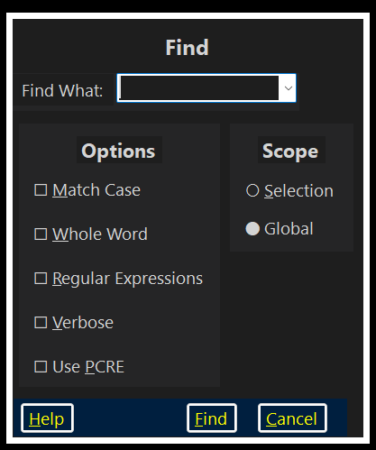
The “Find Next” (CTRL+Alt+f) subitem finds the next identical match. If it gets to the end of the text it wraps around and starts again from the top.
The “Find Previous” (CTRL+SHIFT+Alt+f) subitem finds the previous identical match. If it gets to the beginning of the text it wraps around and starts again from the bottom.
The “Replace” (CTRL+h) subitem opens the Search/Replace dialog.
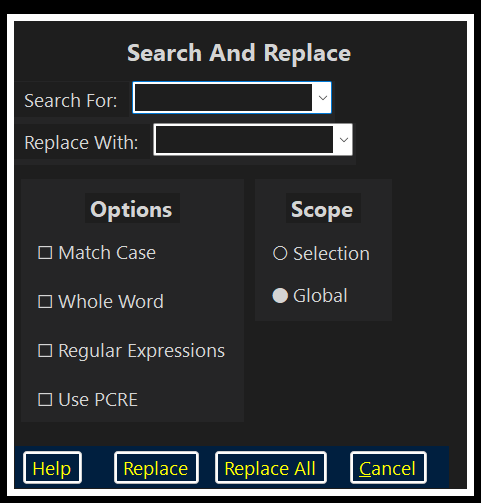
The “GoTo” (CTRL+g) subitem opens the GoTo dialog allowing immediate access to a specific line number.
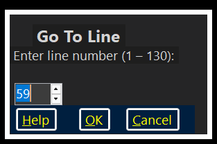
The “Wordwrap” (CTRL+w) subitem, when checked, turns wordwrap on; when unchecked it turns wordwrap off.
The Context Menu
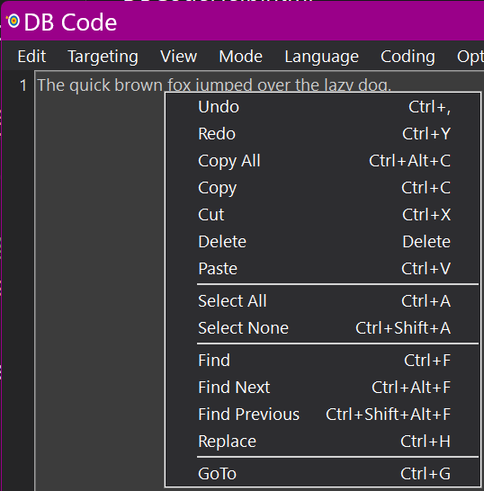
The RichTextBox’s context menu mirrors almost the complete “Edit” menu.
The Targeting Menu (ALT+t)
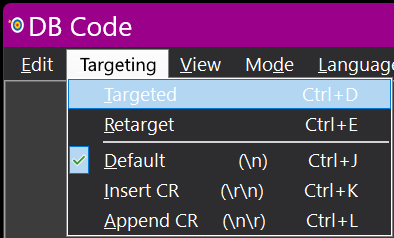
The Targeting menu controls transfers and has five subitems: Targeted; Retarget; Default (\n); Insert CR (\r\n); and Append CR (\n\r).
The “Targeted” (CTRL+d) subitem allows the user to specify whether text transfer will be targeted or untargeted.
The “Retarget” (CTRL+e) changes the targeting to the window immediately behind DB Code. This subitem will change the targeted status if targeting is not set.
Complete details about targeting applications may be found here.
The Targeting Menu’s line–endings subitems
The “Default (\n)” (CTRL+j) forces all transferred lines to have the default line ending: “\n”.
The “Insert CR (\r\n)” (CTRL+k) forces all transferred lines to have the Windows–style line ending: “\r\n”.
The “Append CR (\n\r)” (CTRL+l) forces all transferred lines to have the rare line ending: “\n\r”.
Different operating systems use different line–ending conventions: Unix–style systems (including macOS) use \n alone, while Windows applications commonly expect \r\n. If transferred text arrives in the target application as a single unbroken block with no line breaks, switching to \r\n will usually resolve the problem. The \n\r option exists for compatibility with a small number of legacy systems.
The View Menu (ALT+v)
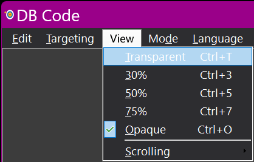
The View menu controls DBCode’s transparency with five transparency–related subitems: Transparent; 30%; 50%; 75%; and Opaque. It also contains the Scrolling subitem which has three sub-subitems: Edge; Scroll and Page. Each of these three sub-subitems has four related sub-subitems: Top or Up; Bottom or Down; Left and Right.
The “Transparent” (CTRL+t) subitem makes the DB Code window completely transparent. All available menu items are still usable even though invisible.
The “30% (CTRL+3)” subitem makes the DB Code window quite transparent.
The “50% (CTRL+5)” subitem makes the DB Code window moderately transparent.
The “75% (CTRL+7)” subitem makes the DB Code window slightly transparent.
The “Opaque (CTRL+o — the letter o)” subitem makes the DB Code window completely opaque.
The “Scrolling” subitem contains tools to allow the user to scroll the active panel.
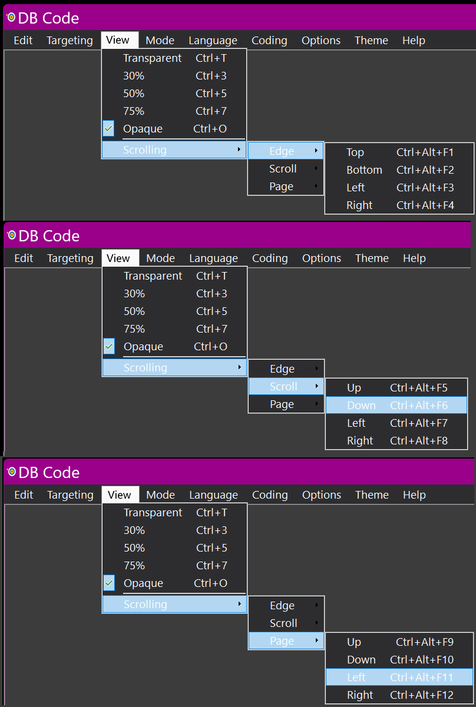
The “Edge” sub-subitem has tools for scrolling the active panel all the way to the edge.
The “Top (CTRL+Alt+F1)” sub-subitem scrolls the active panel all the way to the top.
The “Bottom (CTRL+Alt+F2)” sub-subitem scrolls the active panel all the way to the bottom.
The “Left (CTRL+Alt+F3)” sub-subitem scrolls the active panel all the way to the left edge.
The “Right (CTRL+Alt+F4)” sub-subitem scrolls the active panel all the way to the right edge.
The “Scroll” sub-subitem has tools for scrolling the active panel small amounts.
The “Up (CTRL+Alt+F5)” sub-subitem scrolls the active panel up one line.
The “Down (CTRL+Alt+F6)” sub-subitem scrolls the active panel down one line.
The “Left (CTRL+Alt+F7)” sub-subitem scrolls the active panel left one character.
The “Right (CTRL+Alt+F8)” sub-subitem scrolls the active panel right one character.
The “Page” sub-subitem has tools for scrolling the active panel a page at a time.
The “Up (CTRL+Alt+F9)” sub-subitem scrolls the active panel up one page.
The “Down (CTRL+Alt+F10)” sub-subitem scrolls the active panel down one page.
The “Left (CTRL+Alt+F11)” sub-subitem scrolls the active panel left one page.
The “Right (CTRL+Alt+F12)” sub-subitem scrolls the active panel right one page.
These scrolling tools are provided mainly for the hands–free user who would otherwise find it difficult to move scrollable panels around without a mouse.
The Mode Menu (ALT+d)
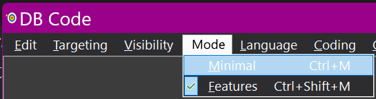
The Mode menu controls the looks of DBCode. “Minimal” is without the menu, “Features” has the menu. Though invisible in Minimal mode, all of the menu items and their subitems are still usable via their keyboard shortcuts.
The “Minimal” (CTRL+m) subitem removes DBCode’s menu.
The “Features” (CTRL+SHIFT+t) subitem restores DBCode’s menu.
The Language Menu (ALT+l)
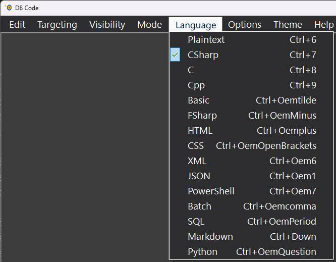
The Language menu controls which syntax style and colors will be applied. It has 15 subitems (none of which have sub-subitems): Plaintext; CSharp; C; Cpp; Basic; FSharp; HTML; CSS; XML; JSON; PowerShell; Batch; SQL; Markdown and Python.
The “Plaintext” (CTRL+ALT+G) subitem applies no syntax. It would be appropriate when DBCode is used as a generic dictation box.
The “CSharp” (CTRL+ALT+H) subitem applies the user’s specified syntax highlighting for the language.
The “C” (CTRL+ALT+I) subitem applies the user’s specified syntax highlighting for the language.
The “Cpp” (CTRL+ALT+J) subitem applies the user’s specified syntax highlighting for the language.
The “Basic” (CTRL+ALT+K) subitem applies the user’s specified syntax highlighting for the language.
The “FSharp” (CTRL+ALT+L) subitem applies the user’s specified syntax highlighting for the language.
The “HTML” (CTRL+ALT+M) subitem applies the user’s specified syntax highlighting for the language.
The “CSS” (CTRL+ALT+N) subitem applies the user’s specified syntax highlighting for the language.
The “XML” (CTRL+ALT+O) subitem applies the user’s specified syntax highlighting for the language.
The “JSON” (CTRL+ALT+P) subitem applies the user’s specified syntax highlighting for the language.
The “PowerShell” (CTRL+ALT+Q) subitem applies the user’s specified syntax highlighting for the language.
The “Batch” (CTRL+ALT+R) subitem applies the user’s specified syntax highlighting for the language.
The “SQL” (CTRL+ALT+S) subitem applies the user’s specified syntax highlighting for the language.
The “Markdown” (CTRL+ALT+T) subitem applies the user’s specified syntax highlighting for the language.
The “Python” (CTRL+ALT+U) subitem applies the user’s specified syntax highlighting for the language.
More about syntax highlighting can be found in the Themes Help Page’s Syntax Highlighting section.
The Coding Menu (ALT+c)
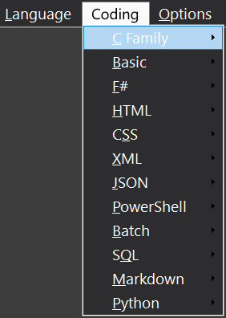
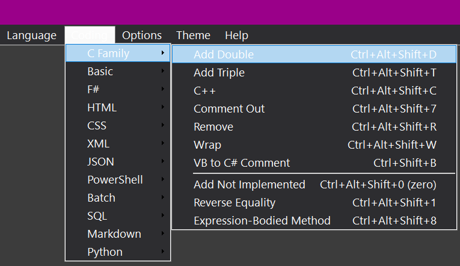
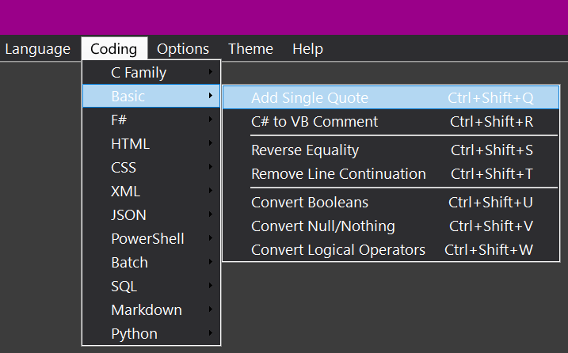
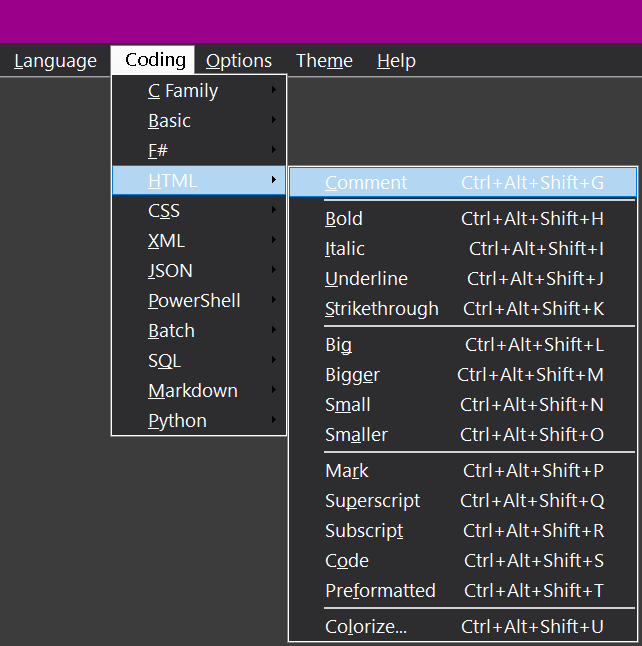
Although all twelve Coding subitems have some simple example snippets included, the user is encouraged to add their own items as desired.
For the sake of brevity, only a few of these subitems have images included here — they are highly repetitive.
More extensive documentation on the shipped snippets can be found here in a plain text document.
The Coding menu allows the user to choose various coding snippets for the supported languages. It has 12 subitems, none of which have sub-subitems.
The “Plaintext” language selection has no entry here because it has no coding snippets.
“HTML” language selection has a good start on giving the user a selection of useful HTML editing features. “Bigger” wraps the selection in …; “Smaller” wraps the selection in …. Colorize… opens the Color Picker to select a color for the foreground color of the selection.
The Options Menu Item (F2 or Ctrl+, the comma)
The “Options” menu item has no subitems — it directly opens the Options dialog.
The Theme Menu (ALT+m)
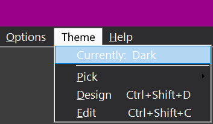
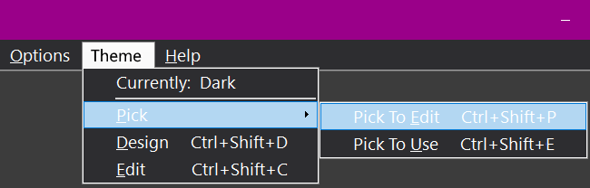
The Theme menu has four subitems: “Currently:…”; “Pick”; “Design (Ctrl+Shift+d)” and “Edit (Ctrl+Shift+e)”.
The “Currently:…” has no associated action — it displays the name of the current Theme.
“Pick” has two sub-subitems: “Pick To Edit (Ctrl+Shift+p)” and “Edit Current (Ctrl+Shift+c)”.
“Pick To Edit (Ctrl+Shift+p)” opens the Theme Picker dialog allowing the user to pick a theme to edit directly (it need not be the current theme). Details on the Theme Picker dialog can be found here.
“Edit Current (Ctrl+Shift+c)” opens the Theme Designer/Editor dialog allowing the user to edit the current theme. Details on the Theme Designer/Editor dialog are available here.
“Design (Ctrl+Shift+d)” opens the Theme Designer/Editor dialog allowing the user to create a new theme initially based on the current theme. Details on the Theme Designer/Editor dialog are available here.
The Help Menu Item (F1)
The “Help” menu item has no subitems — it directly opens this Help page in the user’s preferred browser.